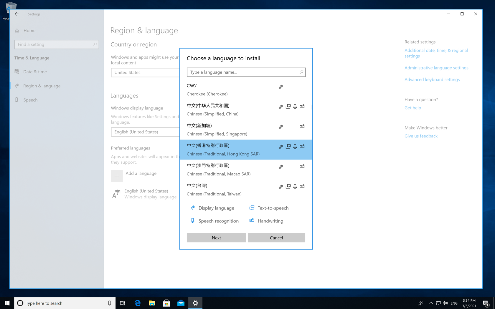
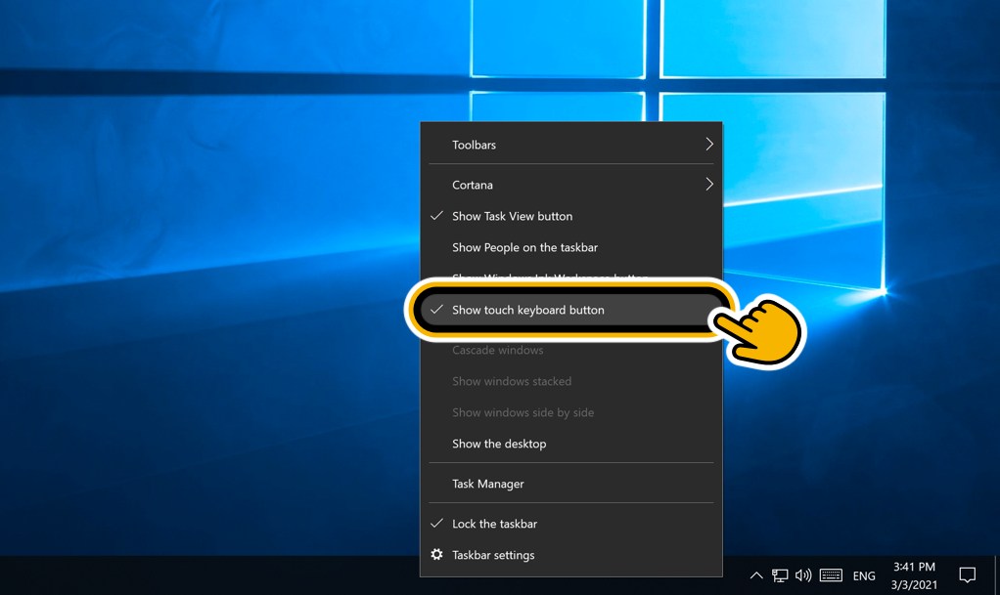
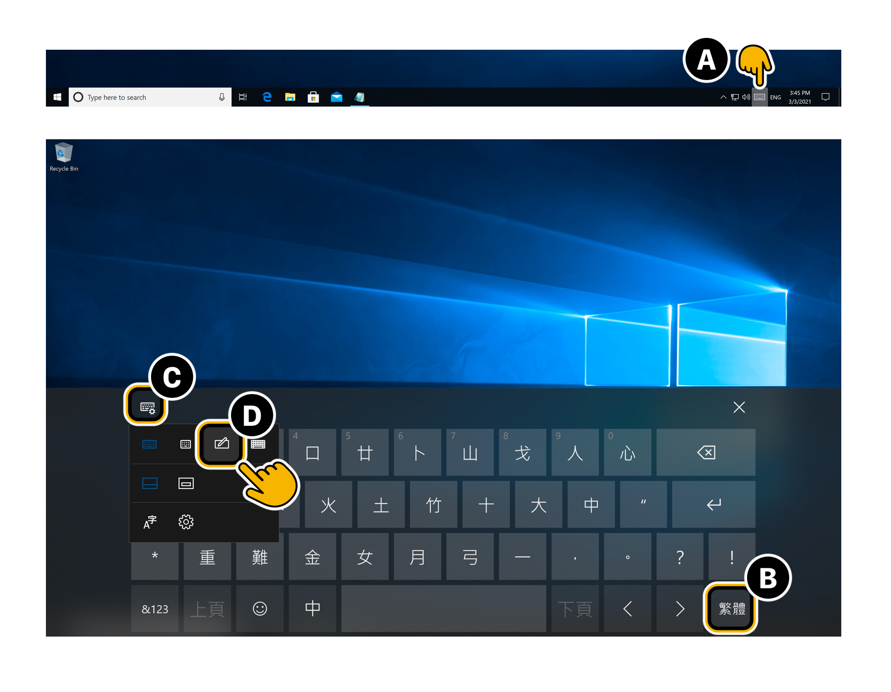
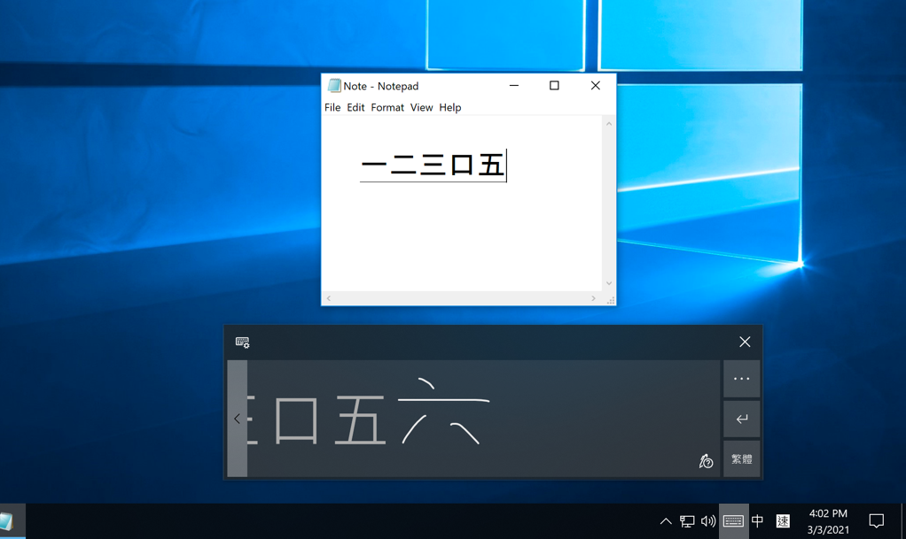
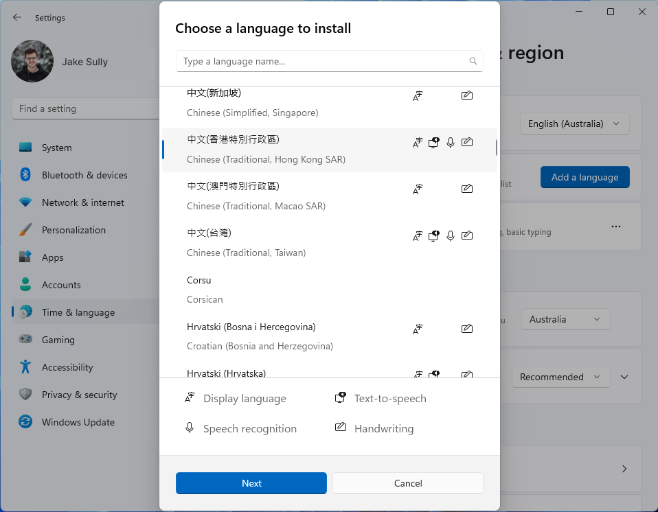
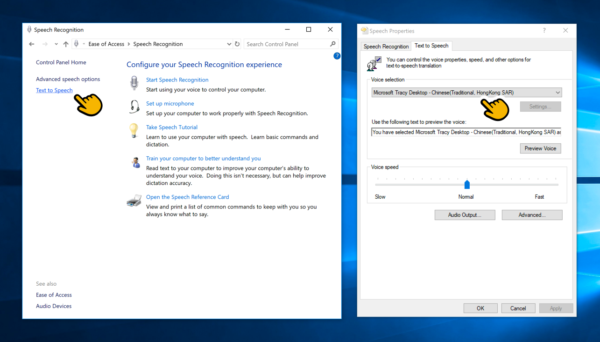
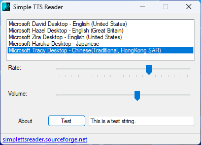
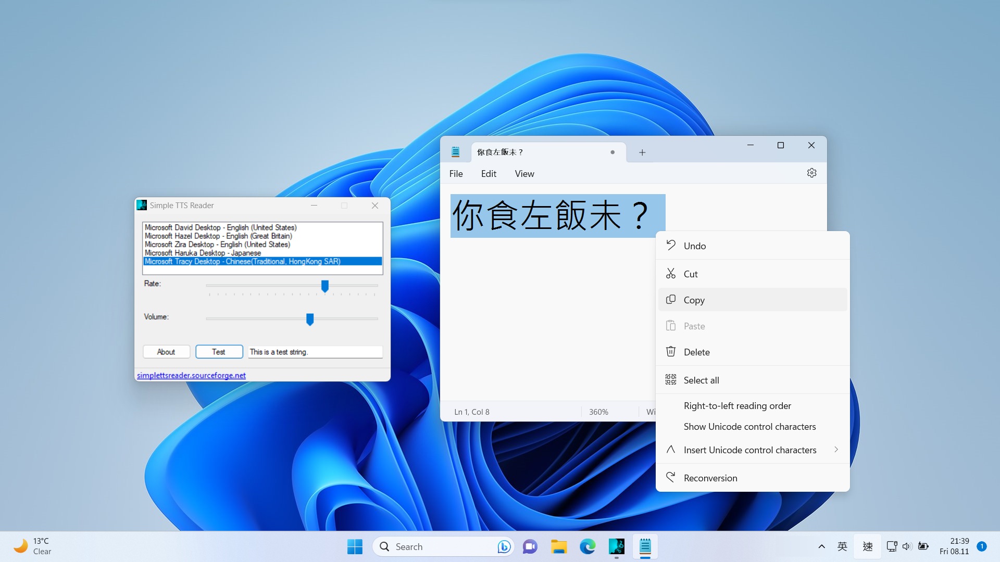
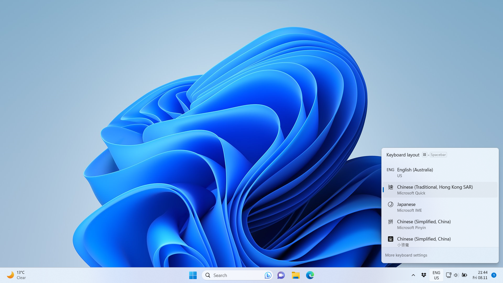
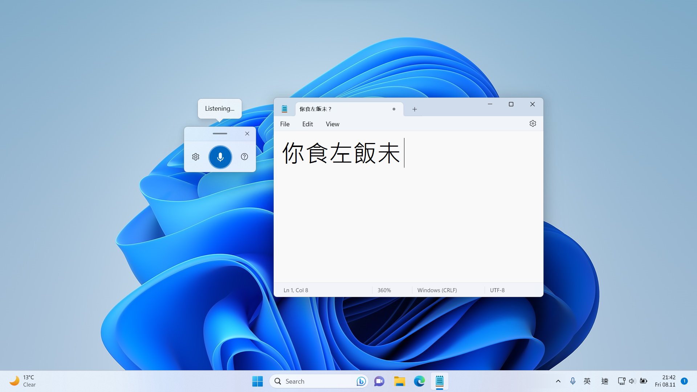

How to write, type, listen, and dictate Cantonese on Windows Computers.
This guide was written to work for Windows 11, Windows 10, and Windows 7.
* Windows can technically read out Cantonese text (Text-to-Speech). However, a 3rd party app is required to do this easily.
** Windows 11 supports Cantonese Dictation (Speech-to-Text). However, Windows 10 does not support Cantonese dictation.
To input Cantonese Chinese by Handwriting:



Now you can tap on the 'Touch Keyboard' button at anytime, and start handwriting chinese characters.

Windows is the only major OS to not officially support typing Cantonese. Meanwhile MacOS, iOS, and Android support typing Cantonese by default.
Fortunately, it is still possible to type Cantonese on Windows with Third Party tools – whether you prefer Jyutping or Yale.
Jyutping is more modern and based on its spellings are based on the International Phonetic Alphabet. Yale is more intuitive for English speakers and has more resources.
TypeDuck provides an easy way to install Jyutping on Windows.
Cantonese Phonetic IME (CPIME) provides instructions on how to install CPIME on Windows. CPIME supports typing Cantonese in Yale, as well as Jyutping, and Sidney Lau.
Windows can read out Cantonese Chinese text (Text to Speech). However, to do this easily, a 3rd party program is required.
To get started:


Open the program. In the list of voices, select "Microsoft Tracy Desktop - Chinese (Traditional, HongKong SAR)".

(If you don't see "Microsoft Tracy", try repeating step 2 and restarting your computer.)Now, you can Select Cantonese Text and have it be read out loud by Copying it (Control+C, or, Right-Click > Copy).

To stop text from being read out every time it's copied, you can close the program or reduce its volume.
(If the program is reading out text, but you can't find it, it might be in the "System Tray". The System Tray is on the Bottom-Right of the screen.)
Microsoft added Cantonese dictation (speech recognition, speech-to-text) in Windows 11. (Windows 10 and older do not actually support Cantonese dictation, even though Windows 10 lists it as part of its Cantonese language pack.)
To input Cantonese by dictating it on your Windows PC:
Now, to dictate Cantonese:


Now instead of typing, you can speak Cantonese Chinese to your Mac and have it write it down for you.
Microsoft’s Voice Assistant, Cortana, is being deprecated. It is being replaced by Bing Chat.
Bing Chat does not currently support Cantonese Chinese.
Note: The information here is based on Windows 11 and Windows 10 (version 1909).
Page last updated August 2023.